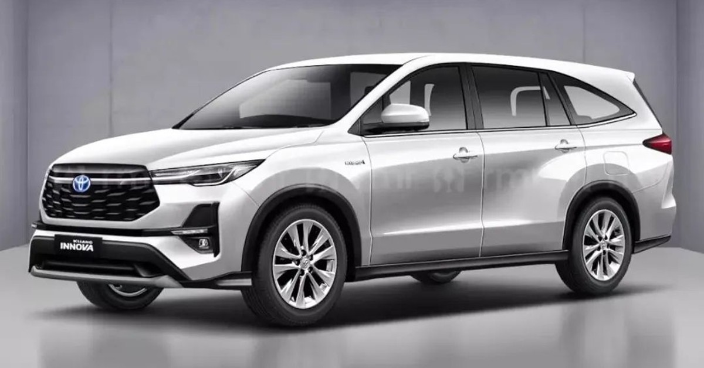
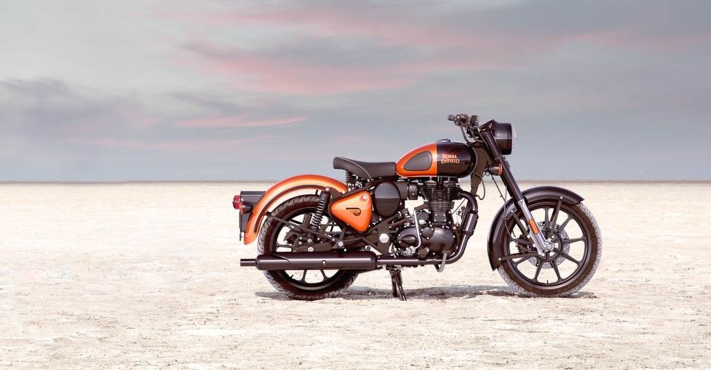

The New Innova Hycross
Rahul Ramakrishna
2 may 2018

Toyota has today hosted the global premiere of the new generation Innova, dubbed the Innova Zenix, in the Indonesian market. The premium MPV will make its market debut on November 25, 2022 while the price announcement could happen at the 2023 Auto Expo in January. The Toyota Innova Zenix/Hycross is a radical departure compared to the existing Innova Crysta.Read more at: https://gaadiwaadi.com/2023-innova-hybrid-launcehd-priced-rs-3-lakh-over-old-gen-petrol/
Iphone 15
Tim Cook
15 sep 2023

Introduced in September 2023, the iPhone 15 and 15 Plus are two of Apple's current flagship iPhones, sold alongside the iPhone 15 Pro and iPhone 15 Pro Max. The new iPhones launched in September 2023, which means now is a the best time to buy an iPhone 15 or iPhone 15 Plus.
As brand-new models, the 6.1-inch iPhone 15 and 6.7-inch iPhone 15 Plus will last for many years to come and will remain part of Apple's flagship lineup for the next 12 months, so you can rest assured that something newer and better is not right around the corner.
Noise Buds VS102 Neo
Abraham
8 Aug 2022

The smaller twin of the Classic 500, the Classic 350 will hold its own against any other motorcycle and then pull some more. The Classic 350 shares its powerplant with the legendary Thunderbird Twinspark. The torque to flatten mountains and the fuel efficiency to cross entire ranges comes in the same understated yet charming styling.
This is a motorcycle that does not need to shout to be heard. Born of a rich heritage and bred with Royal Elegance this 350cc thumper has all the qualities of a typical Royal Enfield. Appreciated then, appreciated now…
Why ride a lesser bike. Nothing more to be said.